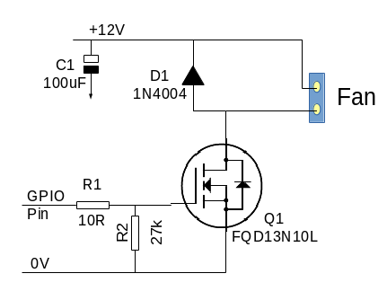

OBJECTIVE
Throughout this project, we aim on creating a product that will clean the air of an enclosed space. Along with filtering the airstream through the device, it will also apply sanitation measures to eradicate the viral infections being passed around the room.
METHODOLOGY
The approach taken by the PureBreeze device is to control the filtering and sanitation of the airstream. Aiming to provide units that the average housebound user could utilize to freshen their own environmental air, while also having the technology to support the space-bound colony missions for facilities where gravity at some level still exists.
A shown in fig.1 the arrangements of components in the airflow, the air intake is from high in the room, pulling in the warm rising gas mixture into the unit's air intake grills. Air is first passed through a copper-laced mesh and foam filter in order to remove large particulates from the air stream, prevent damage to the fan, and filter packs. The Fan ensures that the air continues to move down the column and through the rest of the sanitization and filtering.
Just below the Fan is the location of the first sensor pack. This is described later in this document. The UV-C Light Source is located inside the first filter module on the filter inlet side.
UV-C has a wavelength in the 200 to 280 nm range. This is used regularly as a sanitization for water and air in situations where contamination of the air supply would be a problem. This is seen as an effective measure for killing viral particulates thus diluting its content in the room air. The Granular Activated Charcoal Filter capsule is there to reduce the O3 content of the airflow. It will likely capture the dead viral spores in addition to unpleasant odors. This is followed by a HEP/ULPA Filter capsule, which is capable of removing particles down to 0.3µm in size. The SARS-Covid-2-Covid-19 Virus is 125nm, but even the HEPA/ULPA filters can have some success in catching them if the virus attaches to larger particles to aid its transport. Following the HEP/ULPA Filter capsule is the second sensor pack.
TOOLS USED
{kind=link}